Foundations
Cassy Dorff and Shahryar Minhas
2025-06-26
Source:vignettes/foundations.Rmd
foundations.RmdPackage Overview
You supply data and netify transforms it into easy to
work with network data. The goal of netify is to provide R
functions that simplify and facilitate common tasks related to network
creation, summary, visualization, and modeling. Although our package was
built with social scientists (especially peace science scholars) in
mind, anyone can use it!
This vignette provides a high level overview of our package from start to finish. The best use of this vignette is to introduce the core components of the package to larger audiences. This overview covers our primary functions with data examples and minimal writing.
netify goals:
- Create: Netify your data! We Make it easy for users to create networks from raw data in as well as add additional features, such as nodal and dyadic variables, to the network object.
- Explore: Explore characteristics of the network you created, like summary statistics at both the network and actor levels. Visualize your network.
- Advance: Advance your network analysis to the next stage by preparing it for use in other network packages and modeling approaches.
netify provides a suite of primary functions to help
achieve these goals:
netify begins with the user’s data input. Data types:
our core function, netify handles up to 7 different data
inputs, including data frames and edgelists, see documentation for more
detail.
-
The package can also create different types of networks including:
- cross sectional networks
- longitudinal (with static and varying actor composition)
- bipartite networks
- multilayer
-
As well as create networks with different edge types:
- weighted
- binary
- symmetric or non-symmetric
Step 1: Create 💡
Begin by loading packages and supplying the data. We will use the
peacesciencer package to grab some familiar data.
# load packages
library(netify)
# install extra packages for this vignette
if(!'tidyverse' %in% rownames(installed.packages())){
install.packages('tidyverse', repos='https://cloud.r-project.org') }
if(!'peacesciencer' %in% rownames(installed.packages())){
install.packages('peacesciencer', repos='https://cloud.r-project.org') }
# load necessary packages for this vignette
library(peacesciencer)
library(tidyverse)
# organize external data for peacesciencer
peacesciencer::download_extdata()
# create dyadic data set over time using peacesciencer
cow_dyads <- create_dyadyears(
subset_years = c(1995:2014)
) |>
# add mids
add_cow_mids() |>
# add capital distance
add_capital_distance() |>
# add democracy
add_democracy() |>
# add gdp
add_sdp_gdp()Next, create a netlet object from the above COW data
frame using our package’s core function netify. There are a
number of useful parameters, but the most important ones to highlight
are:
-
inputis, in this use case, a dyadic data.frame that should have at the following variables used to specify actors:-
actor1: indicates actor 1 variable in the data -
actor2: indicates actor 2 variable in the data
-
netify_typeis a type of netlet object (cross-sec,longit_list, orlongit_array).
mid_long_network <- netify(
input = cow_dyads,
actor1='ccode1', actor2='ccode2', time='year',
weight='cowmidonset',
actor_time_uniform=FALSE,
sum_dyads=FALSE, symmetric=TRUE,
diag_to_NA=TRUE, missing_to_zero=TRUE,
nodal_vars = c('v2x_polyarchy1', 'v2x_polyarchy2'),
dyad_vars = c('capdist'),
dyad_vars_symmetric = c(TRUE)
)## ! Converting `actor1` and/or `actor2` to character vector(s).Congratulations you have created a network object! 🎉
We can also add nodal and dyadic data after we’ve created the network
via the add_node_vars() and add_dyad_vars()
functions.
Let’s assume that we had information about each actor in the network that we’d like to add as a nodal variable after we already made the network object. This could be from our original data set or elsewhere. For example, lets add a logged variable measuring gdp for each node in the network over time:
# create a vector of nodal data
node_data <- unique(cow_dyads[,c("ccode1", "year", "wbgdppc2011est2")])
node_data$wbgdppc2011est2_log <- log(node_data$wbgdppc2011est2)
# add nodal variable to netlet object
mid_long_network <- add_node_vars(
netlet = mid_long_network,
node_data = node_data,
actor = "ccode1",
time = "year"
)
# create another dyadic var in cow
cow_dyads$log_capdist = log(cow_dyads$capdist + 1)
# now lets add this to the netlet
mid_long_network <- add_dyad_vars(
netlet = mid_long_network,
dyad_data= cow_dyads,
actor1= 'ccode1',
actor2='ccode2',
time='year',
dyad_vars = 'log_capdist',
dyad_vars_symmetric = TRUE
)Step 2: Explore and Summarize 🔎
We made a network, so let’s look at it. First, we might want to take
a peek at the network object to see if the matrix looks the
way we’d expect it to look. This function lets you glance at a specific
slice of the network if it is longitudinal or the entire network if it
is cross-sectional. (To actually subset the netlet object and make a new
object use netify’s subset function.)
## $`2009`
## 100 101 110 115 130
## 100 NA 1 0 0 1
## 101 1 NA 0 0 0
## 110 0 0 NA 0 0
## 115 0 0 0 NA 0
## 130 1 0 0 0 NA
##
## $`2010`
## 100 101 110 115 130
## 100 NA 1 0 0 0
## 101 1 NA 0 0 0
## 110 0 0 NA 0 0
## 115 0 0 0 NA 0
## 130 0 0 0 0 NANext, let’s examine a few basic summary statistics about the network
using oursummary() function.
# create data.frame that provides network-level summary stats
# for each year of the network
mid_long_summary <- summary(mid_long_network)We can also make a quick visualization of network statistics over time using the summary statistics data frame.
plot_graph_stats(mid_long_summary)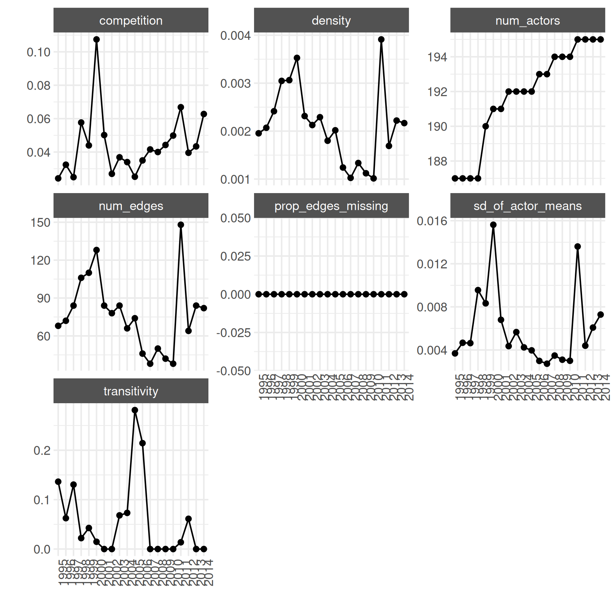
These graph statistics are useful for understanding changes overtime
at the network level, however, we might also want to look at actor-level
statistics overtime. Our built-in function, summary_actor
will calculate in-degree, out-degree, average degree, and eigenvector
centrality for each actor in each time period. The
across_actors function allows users to toggle whether they
want a summary of a given statistic across all actors (shown in a
density plot) or for specific actors:
# every year & every actor
summary_actor_mids <- summary_actor(mid_long_network)
head(summary_actor_mids)## actor time degree prop_ties network_share closeness betweenness
## 1 100 1995 1 0.005347594 0.01470588 1 0
## 2 101 1995 1 0.005347594 0.01470588 1 0
## 3 110 1995 0 0.000000000 0.00000000 NaN 0
## 4 115 1995 0 0.000000000 0.00000000 NaN 0
## 5 130 1995 1 0.005347594 0.01470588 1 0
## 6 135 1995 1 0.005347594 0.01470588 1 0
## eigen_vector
## 1 0
## 2 0
## 3 0
## 4 0
## 5 0
## 6 0We can look at the distribution of the statistic for all actors over time:
# density plot across all actors
# for each stat
plot_actor_stats(
summary_actor_mids,
across_actor= TRUE,
)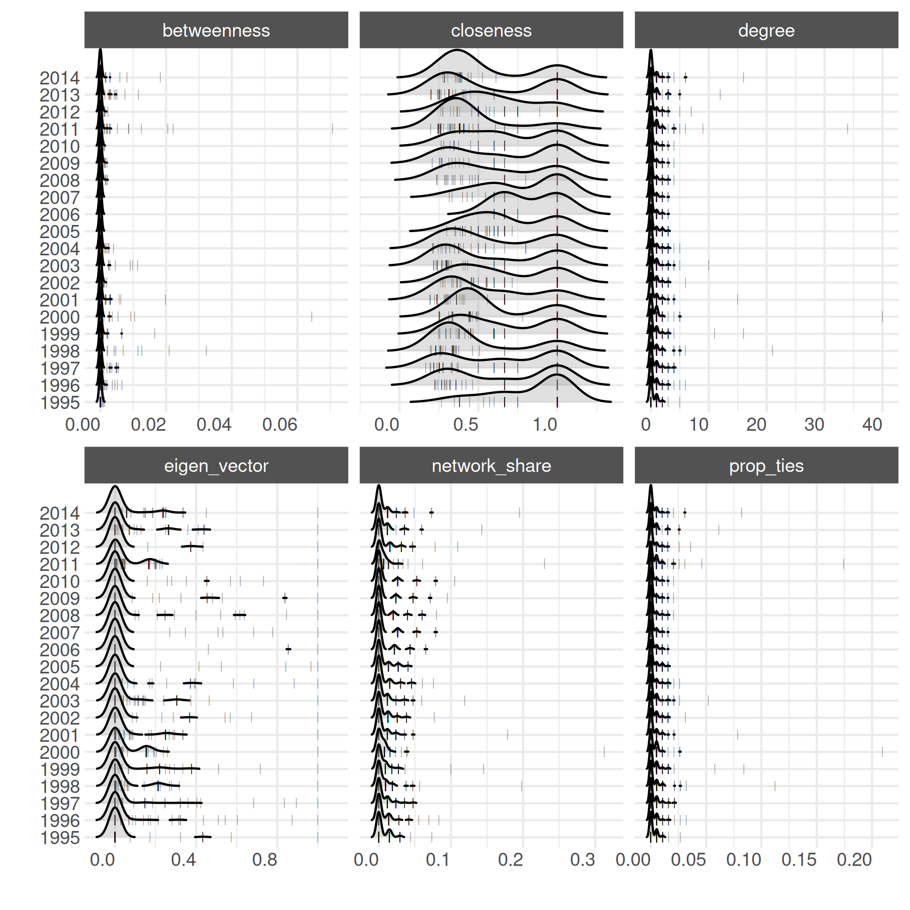
Or we might like to select a specific statistic to focus on across actors over time:
# focus on closeness
plot_actor_stats(
summary_actor_mids,
across_actor = TRUE,
specific_stats='closeness'
)## Picking joint bandwidth of 0.114## Warning: Removed 2913 rows containing non-finite outside the scale range
## (`stat_density_ridges()`).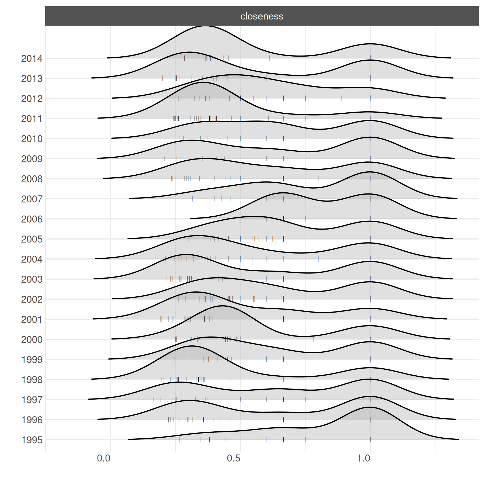
Say that we wanted to showcase actor-specific statistics over time. We can use the plot_actor_stats function for this as well, though it’s highly recommended to subset to a few actors for a more legible plot.
# top 5 GDP countries (USA, China, Japan, Germany, India)
top_5 <- c("2", "710", "740", "255", "750")
#
plot_actor_stats(
summary_actor_mids,
across_actor = FALSE,
specific_actors = top_5
)## Warning: Removed 2913 rows containing missing values or values outside the scale range
## (`geom_point()`).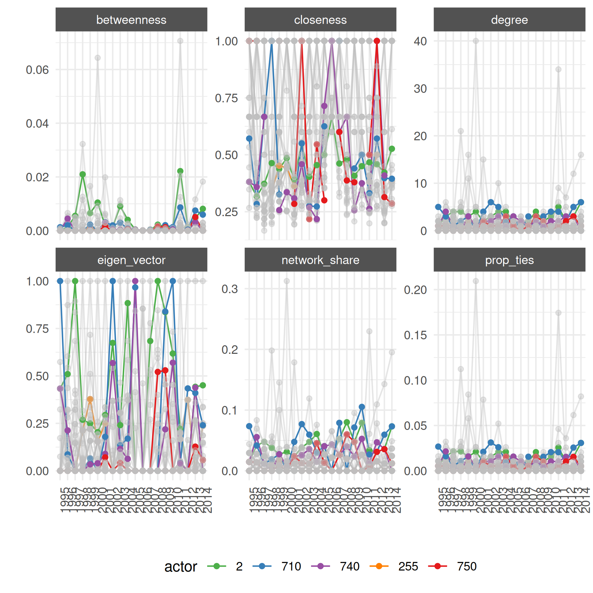
We can also zoom into a specific time slice of the network:
summary_df_static = summary_actor_mids[summary_actor_mids$time == 2011,]
plot_actor_stats(
summary_df_static,
across_actor=FALSE,
specific_actors=top_5
)## ! Note: The `summary_df` provided only has one unique time point, so longitudional will be set to FALSE.## Warning: Removed 123 rows containing missing values or values outside the scale range
## (`position_quasirandom()`).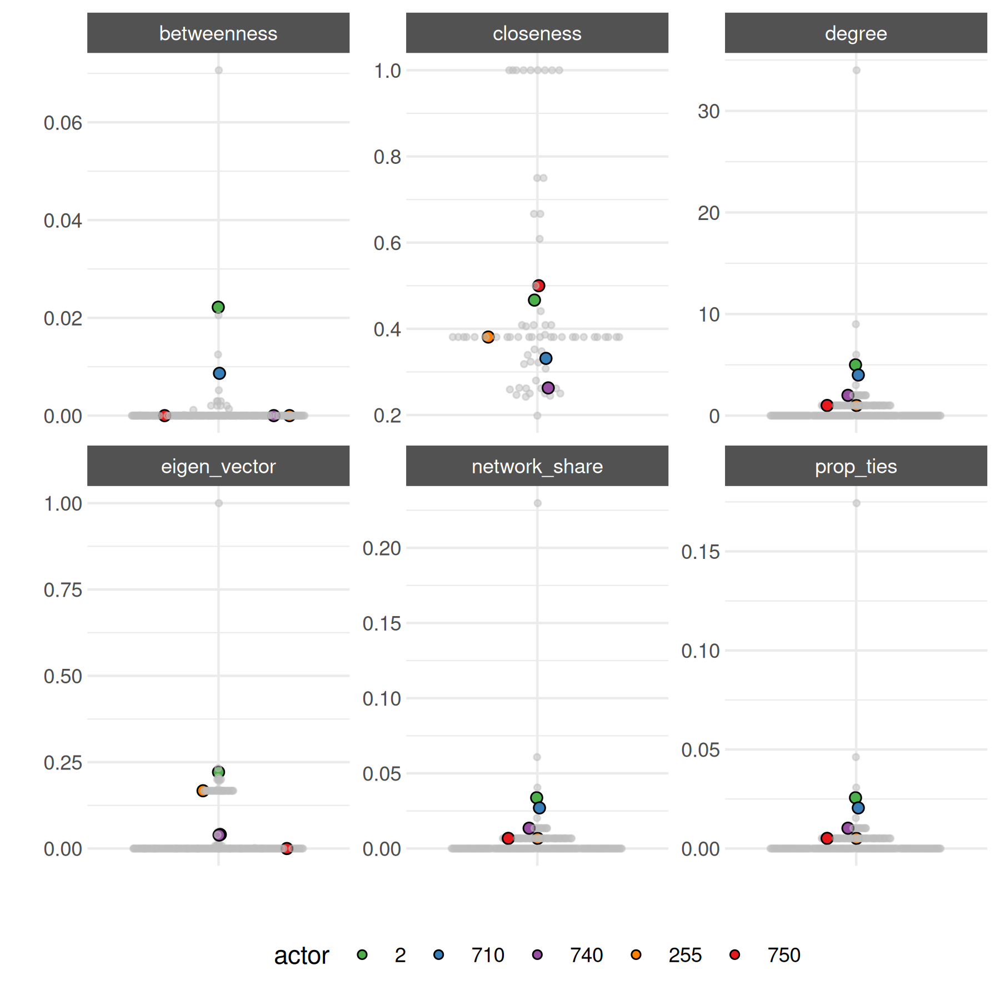
Instead of looking at summary statistics, we also might want to simply visualize the entire network. We can do this by plotting the netify object. (Isolates removed by default and seed set to 6886 for node layout).
Our goal was to make this super easy for plotting time-varying attributes or actors.
# default plot
plot.netify(mid_long_network,
static_actor_positions = TRUE,
remove_isolates = FALSE)## Warning: Removed 773 rows containing missing values or values outside the scale range
## (`geom_segment()`).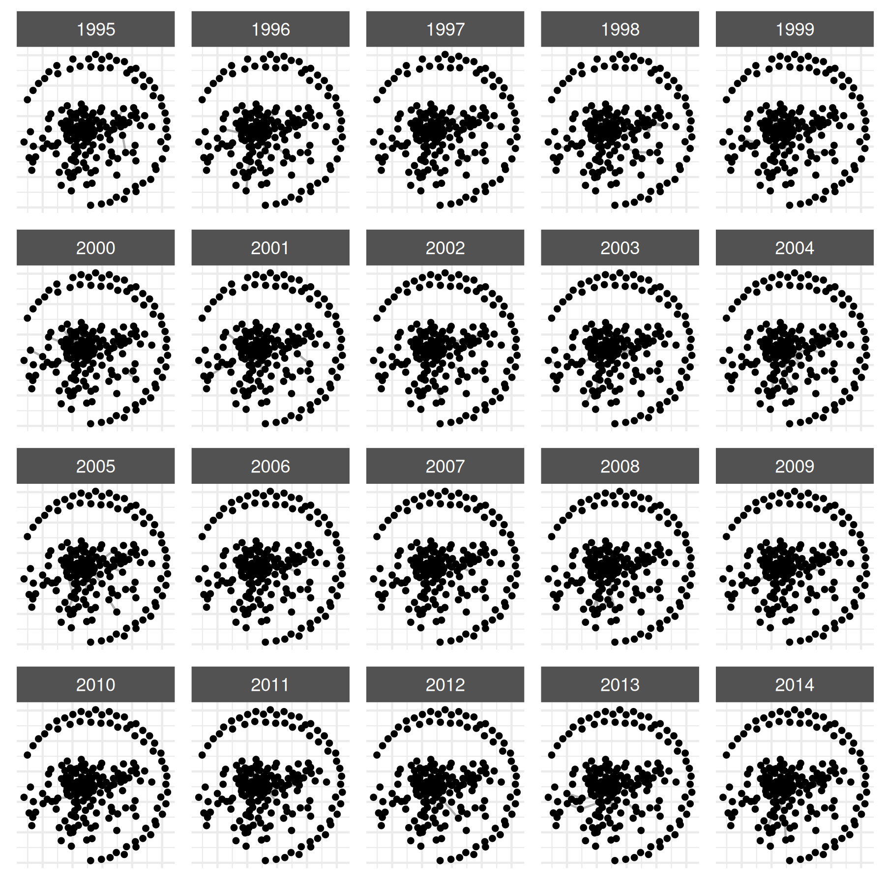
# a little cleaner
plot(
mid_long_network,
edge_color='grey',
node_size=2
)## Warning: Removed 773 rows containing missing values or values outside the scale range
## (`geom_segment()`).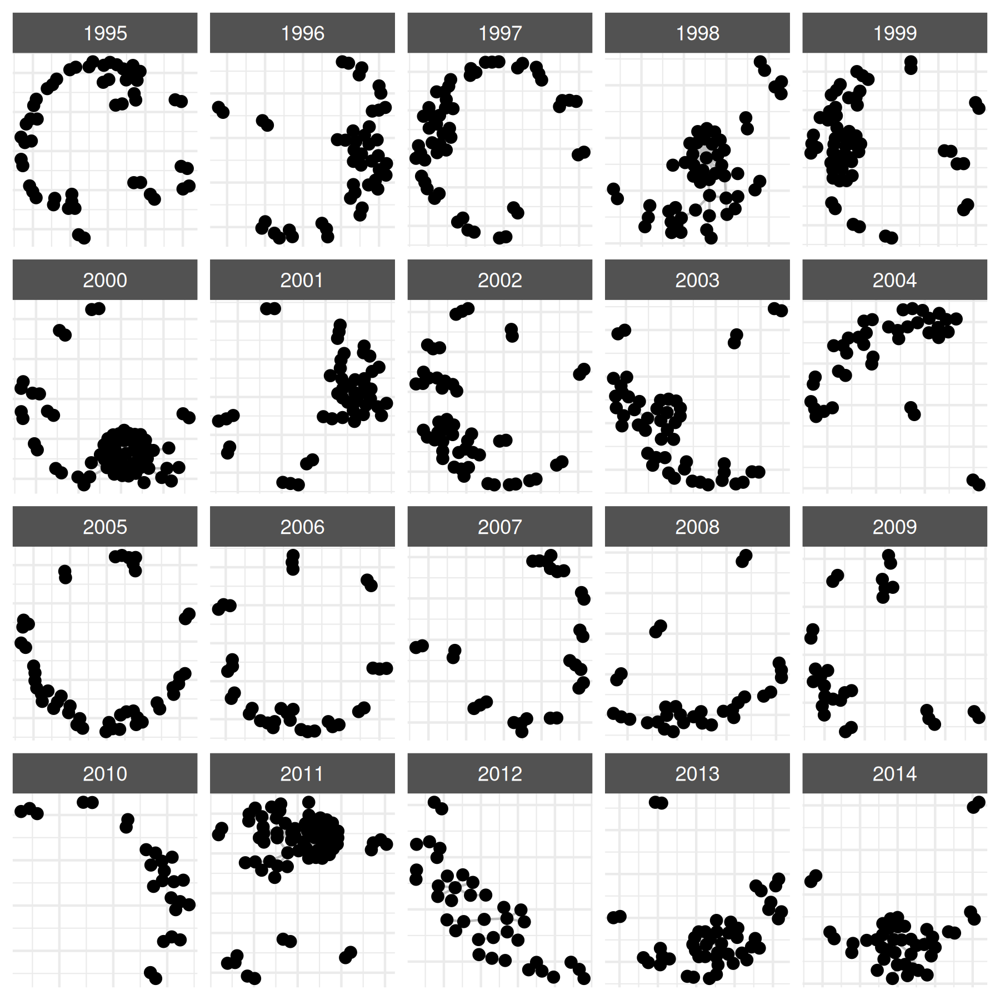
We can also use netify functions to explore actor level
summary statistics in the network graph.
# add actor variables from summary_actor_mids
mid_long_network = add_node_vars(
mid_long_network,
summary_actor_mids,
actor='actor', time='time',
node_vars = c('degree', 'prop_ties', 'eigen_vector'),
)We can quickly inspect the object with the print
function.
# print netlet obj to make sure they got added to nodal features
print(mid_long_network)## ✔ Hello, you have created network data, yay!
## • Unipartite
## • Symmetric
## • Weights from `cowmidonset`
## • Longitudinal: 20 Periods
## • # Unique Actors: 195
## Network Summary Statistics (averaged across time):
## dens miss trans
## cowmidonset 0.002 0 0.056
## • Nodal Features: v2x_polyarchy1, v2x_polyarchy2, wbgdppc2011est2,
## wbgdppc2011est2_log, degree, prop_ties, eigen_vector
## • Dyad Features: capdist, log_capdistAs well as look at the attributes of the data and specify showing the nodal data information.
## actor time v2x_polyarchy1 v2x_polyarchy2 wbgdppc2011est2 wbgdppc2011est2_log
## 1 100 1995 0.595 0.883 10.740 2.373975
## 2 100 1996 0.574 0.881 10.768 2.376579
## 3 100 1997 0.581 0.868 10.798 2.379361
## 4 100 1998 0.558 0.867 10.833 2.382597
## 5 100 1999 0.553 0.864 10.860 2.385086
## 6 100 2000 0.562 0.863 10.888 2.387661
## degree prop_ties eigen_vector
## 1 1 0.005347594 0.000000e+00
## 2 0 0.000000000 0.000000e+00
## 3 1 0.005347594 0.000000e+00
## 4 0 0.000000000 5.137642e-20
## 5 0 0.000000000 0.000000e+00
## 6 1 0.005235602 4.953675e-03
#i.e.,
head(attributes(mid_long_network)$nodal_data)## actor time v2x_polyarchy1 v2x_polyarchy2 wbgdppc2011est2 wbgdppc2011est2_log
## 1 100 1995 0.595 0.883 10.740 2.373975
## 2 100 1996 0.574 0.881 10.768 2.376579
## 3 100 1997 0.581 0.868 10.798 2.379361
## 4 100 1998 0.558 0.867 10.833 2.382597
## 5 100 1999 0.553 0.864 10.860 2.385086
## 6 100 2000 0.562 0.863 10.888 2.387661
## degree prop_ties eigen_vector
## 1 1 0.005347594 0.000000e+00
## 2 0 0.000000000 0.000000e+00
## 3 1 0.005347594 0.000000e+00
## 4 0 0.000000000 5.137642e-20
## 5 0 0.000000000 0.000000e+00
## 6 1 0.005235602 4.953675e-03And now return to our network graph by highlighting specific nodal attributes:
# vary node size by degree
plot(
mid_long_network,
edge_color='grey',
point_size_var='degree'
)## Warning: Removed 773 rows containing missing values or values outside the scale range
## (`geom_segment()`).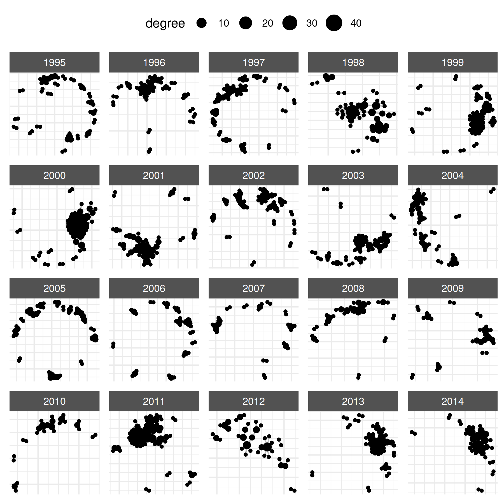
# vary node color by polyarchy
plot(
mid_long_network,
edge_color='grey',
node_size_by='degree',
node_color_by='v2x_polyarchy1',
node_color_label='Polyarchy',
node_size_label='Degree'
) +
scale_color_gradient2()## Scale for colour is already present.
## Adding another scale for colour, which will replace the existing scale.## Warning: Removed 773 rows containing missing values or values outside the scale range
## (`geom_segment()`).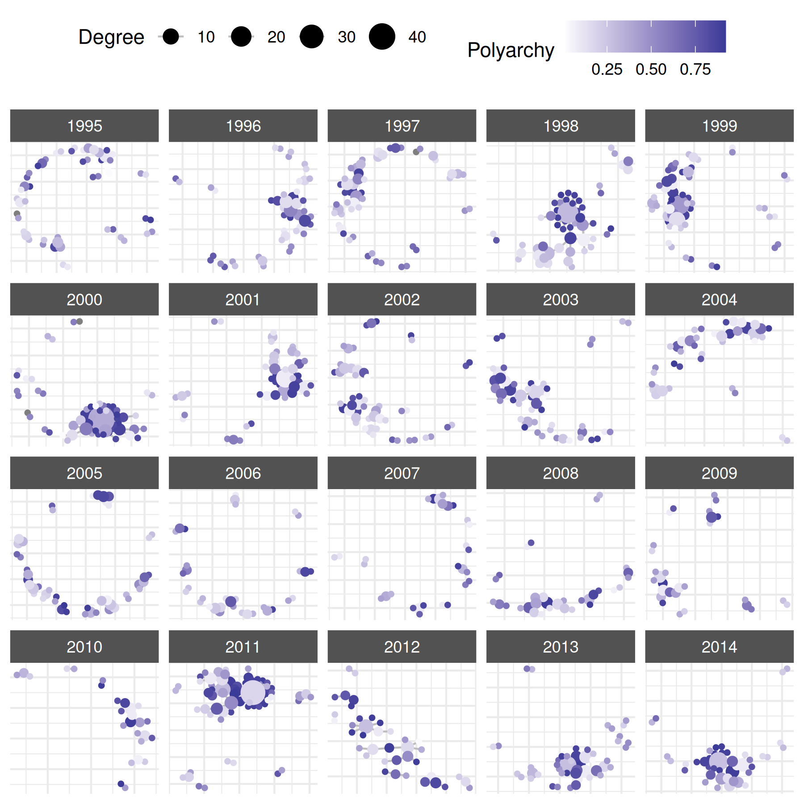
We might also prefer to add labels, but only a select few:
library(countrycode)
cowns = countrycode(
c(
'United States', 'China', 'Russia',
'France', 'Germany', 'United Kingdom'),
'country.name', 'cown'
)
cabbs = countrycode(cowns, 'cown', 'iso3c')
plot(
mid_long_network,
edge_color='grey',
node_size_by='degree',
node_color_by='v2x_polyarchy1',
node_color_label='Polyarchy',
node_size_label='Degree',
select_text = cowns,
select_text_display = cabbs,
text_size = 3
) +
scale_color_gradient2()## Scale for colour is already present.
## Adding another scale for colour, which will replace the existing scale.## Warning: Removed 773 rows containing missing values or values outside the scale range
## (`geom_segment()`).## Warning: Removed 839 rows containing missing values or values outside the scale range
## (`geom_text()`).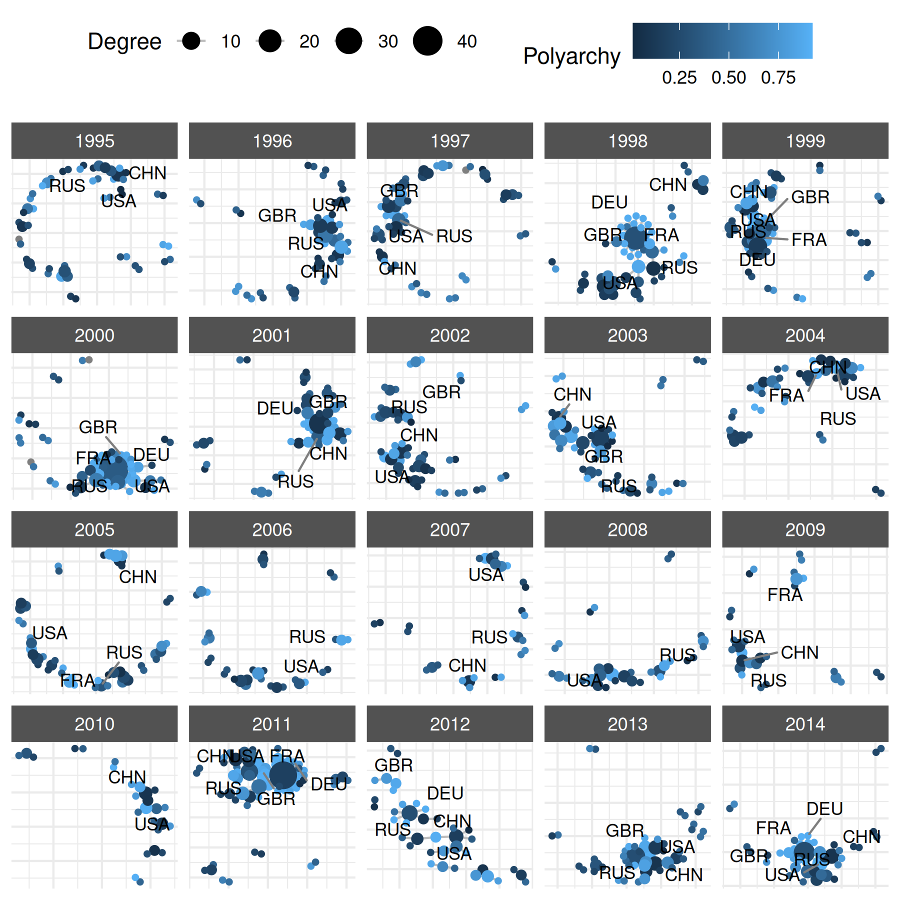
# or we can go with labels only
# and remove points
plot(
mid_long_network,
edge_color='grey',
add_points = FALSE,
add_label = TRUE,
label_size_by='degree',
label_color = 'white',
label_fill_by='v2x_polyarchy1',
label_fill_label='Polyarchy',
label_size_label='Degree'
) + guides(size='none')## Warning: Removed 773 rows containing missing values or values outside the scale range
## (`geom_segment()`).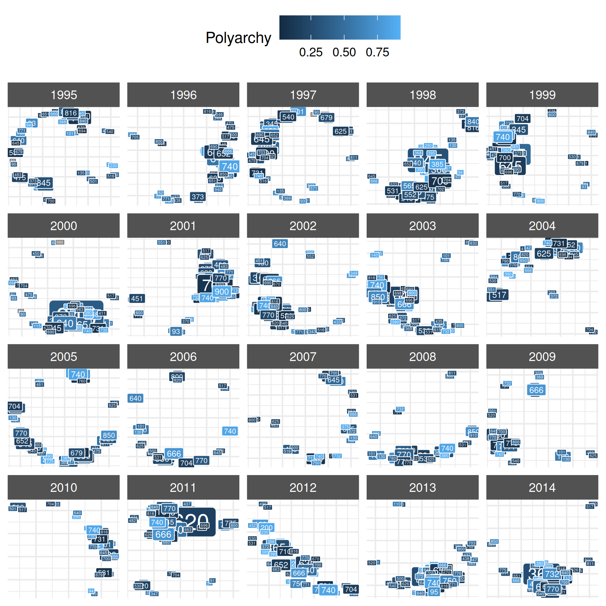
Step 3: Advance 🚀
Once we have created and explored our network object, we might want
to continue analyzing the data using different modeling approaches.
netify makes this simple even though those models often
aren’t! And for the sake of convergence lets go with cross-sectional
networks.
First, prep the data:
# prep data
cow_cross = cow_dyads |>
group_by(ccode1, ccode2) |>
summarize(
cowmidonset = ifelse(any(cowmidonset>0), 1, 0),
capdist = mean(capdist),
polity21 = mean(polity21, na.rm=TRUE),
polity22 = mean(polity22, na.rm=TRUE),
wbgdp2011est1 = mean(wbgdp2011est1, na.rm=TRUE),
wbgdp2011est2 = mean(wbgdp2011est2, na.rm=TRUE),
wbpopest1 = mean(wbpopest1, na.rm=TRUE),
wbpopest2 = mean(wbpopest2, na.rm=TRUE)
) |>
ungroup() |>
mutate(
capdist = log(capdist+1)
)
# subset set to actors with 10mil pop
actor_to_keep = cow_cross |>
select(ccode1, wbpopest1) |>
filter(wbpopest1>log(10000000)) |>
distinct(ccode1)
# filter cow_cross by actor_to_keep
cow_cross = cow_cross |>
filter(ccode1 %in% actor_to_keep$ccode1) |>
filter(ccode2 %in% actor_to_keep$ccode1)
# create netlet
mid_cross_network <- netify(
cow_cross,
actor1='ccode1', actor2='ccode2',
weight='cowmidonset',
sum_dyads=FALSE, symmetric=TRUE,
diag_to_NA=TRUE, missing_to_zero=FALSE,
nodal_vars = c(
'polity21', 'polity22', 'wbgdp2011est1',
'wbgdp2011est2', 'wbpopest1', 'wbpopest2'),
dyad_vars = c('capdist'),
dyad_vars_symmetric = c(TRUE)
)Next, let’s take a look at passing our netify object to the
amen function:
# install (if necessary) and load amen
if(!'amen' %in% rownames(installed.packages())){
install.packages('amen', repos='https://cloud.r-project.org') }
library(amen)
# prep for amen
mid_cross_amen <- netify_to_amen(mid_cross_network)
# we got all the elements we need for amen! woohoO!
str(mid_cross_amen)## List of 4
## $ Y : num [1:81, 1:81] NA 1 1 0 0 0 0 0 0 0 ...
## ..- attr(*, "dimnames")=List of 2
## .. ..$ : chr [1:81] "100" "101" "130" "135" ...
## .. ..$ : chr [1:81] "100" "101" "130" "135" ...
## $ Xdyad: num [1:81, 1:81, 1] 0 6.93 6.6 7.54 7.96 ...
## ..- attr(*, "dimnames")=List of 3
## .. ..$ : chr [1:81] "100" "101" "130" "135" ...
## .. ..$ : chr [1:81] "100" "101" "130" "135" ...
## .. ..$ : chr "capdist"
## $ Xrow : num [1:81, 1:6] 7 4.35 6.35 6.8 8 9.2 7.8 10 10 10 ...
## ..- attr(*, "dimnames")=List of 2
## .. ..$ : chr [1:81] "100" "101" "130" "135" ...
## .. ..$ : chr [1:6] "polity21" "polity22" "wbgdp2011est1" "wbgdp2011est2" ...
## $ Xcol : num [1:81, 1:6] 7 4.35 6.35 6.8 8 9.2 7.8 10 10 10 ...
## ..- attr(*, "dimnames")=List of 2
## .. ..$ : chr [1:81] "100" "101" "130" "135" ...
## .. ..$ : chr [1:6] "polity21" "polity22" "wbgdp2011est1" "wbgdp2011est2" ...
# plug and run
mid_amen_mod = ame(
Y=mid_cross_amen$Y,
Xdyad=mid_cross_amen$Xdyad,
Xrow=mid_cross_amen$Xrow,
family='bin',
R=0,
symmetric=TRUE,
seed=6886,
nscan=50,
burn=10,
odens=1,
plot=FALSE,
print=FALSE
)We can apply the same process to ERGMs:
# install (if necessary) and load ergm
if(!'ergm' %in% rownames(installed.packages())){
install.packages('ergm', repos='https://cloud.r-project.org') }
library(ergm)## Loading required package: network##
## 'network' 1.19.0 (2024-12-08), part of the Statnet Project
## * 'news(package="network")' for changes since last version
## * 'citation("network")' for citation information
## * 'https://statnet.org' for help, support, and other information## Registered S3 methods overwritten by 'ergm':
## method from
## simulate.formula lme4
## simulate.formula_lhs lme4##
## 'ergm' 4.9.0 (2025-06-09), part of the Statnet Project
## * 'news(package="ergm")' for changes since last version
## * 'citation("ergm")' for citation information
## * 'https://statnet.org' for help, support, and other information## 'ergm' 4 is a major update that introduces some backwards-incompatible
## changes. Please type 'news(package="ergm")' for a list of major
## changes.
# called netify_to_statnet because it's a reference
# to the network library, which is what ergm uses
mid_cross_ergm = netify_to_statnet(mid_cross_network)
# attributes should all be loaded into the
# appropriate slot
# notice edge attribtues get a _e suffix added
mid_cross_ergm## Network attributes:
## vertices = 81
## directed = FALSE
## hyper = FALSE
## loops = FALSE
## multiple = FALSE
## bipartite = FALSE
## cowmidonset: 81x81 matrix
## capdist: 81x81 matrix
## total edges= 160
## missing edges= 0
## non-missing edges= 160
##
## Vertex attribute names:
## polity21 polity22 vertex.names wbgdp2011est1 wbgdp2011est2 wbpopest1 wbpopest2
##
## Edge attribute names:
## capdist_e cowmidonset
# plug and run
# Fit the ERGM model (well not a real ergm)
ergm_model <- ergm(
formula = mid_cross_ergm ~
edges +
nodecov("polity21") +
nodecov("wbgdp2011est2") +
nodecov("wbpopest2")
)## Starting maximum pseudolikelihood estimation (MPLE):## Obtaining the responsible dyads.## Evaluating the predictor and response matrix.## Maximizing the pseudolikelihood.## Finished MPLE.## Evaluating log-likelihood at the estimate.References
Csárdi G, Nepusz T, Traag V, Horvát S, Zanini F, Noom D, Müller K (2024). igraph: Network Analysis and Visualization in R. doi:10.5281/zenodo.7682609, R package version 2.0.3, https://CRAN.R-project.org/package=igraph.
Davies, Shawn, Therese Pettersson & Magnus Öberg (2023). Organized violence 1989-2022 and the return of conflicts between states?. Journal of Peace Research 60(4).
Handcock M, Hunter D, Butts C, Goodreau S, Krivitsky P, Morris M (2018). ergm: Fit, Simulate and Diagnose Exponential-Family Models for Networks. The Statnet Project (http://www.statnet.org). R package version 3.9.4, https://CRAN.R-project.org/package=ergm.
Hoff, Peter D. “Dyadic data analysis with amen.” arXiv preprint arXiv:1506.08237 (2015).
Högbladh Stina, 2023, “UCDP GED Codebook version 23.1”, Department of Peace and Conflict Research, Uppsala University
Miller S (2022). “peacesciencer: An R Package for Quantitative Peace Science Research.” Conflict Management and Peace Science, 39(6), 755–779. doi: 10.1177/07388942221077926.
Statnet Development Team (Pavel N. Krivitsky, Mark S. Handcock, David R. Hunter, Carter T. Butts, Chad Klumb, Steven M. Goodreau, and Martina Morris) (2003-2023). statnet: Software tools for the Statistical Modeling of Network Data. URL http://statnet.org
Sundberg, Ralph and Erik Melander (2013) Introducing the UCDP Georeferenced Event Dataset. Journal of Peace Research 50(4).